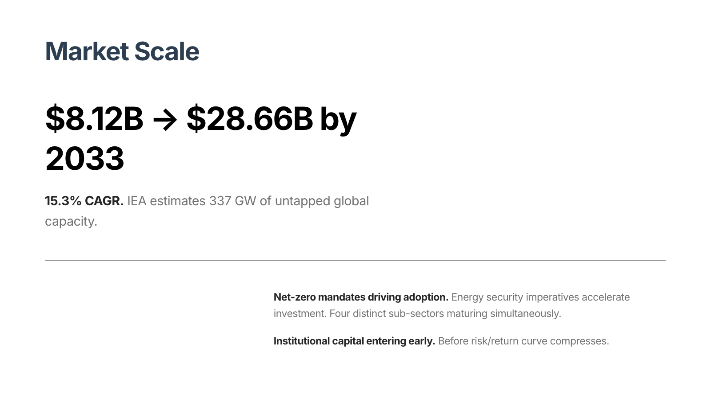
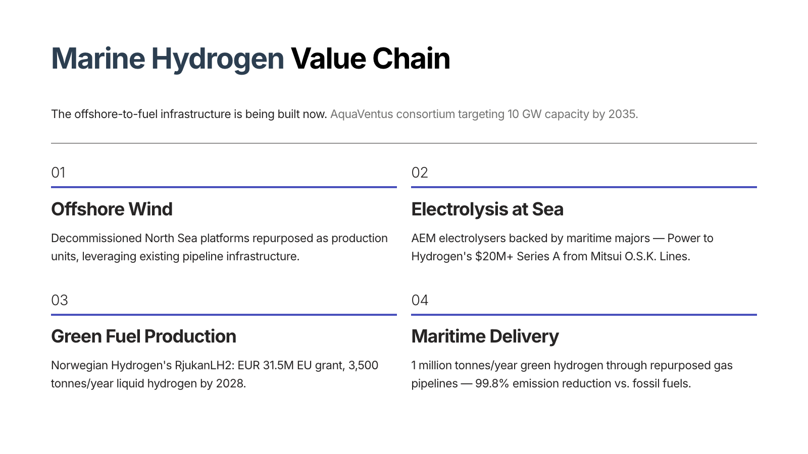
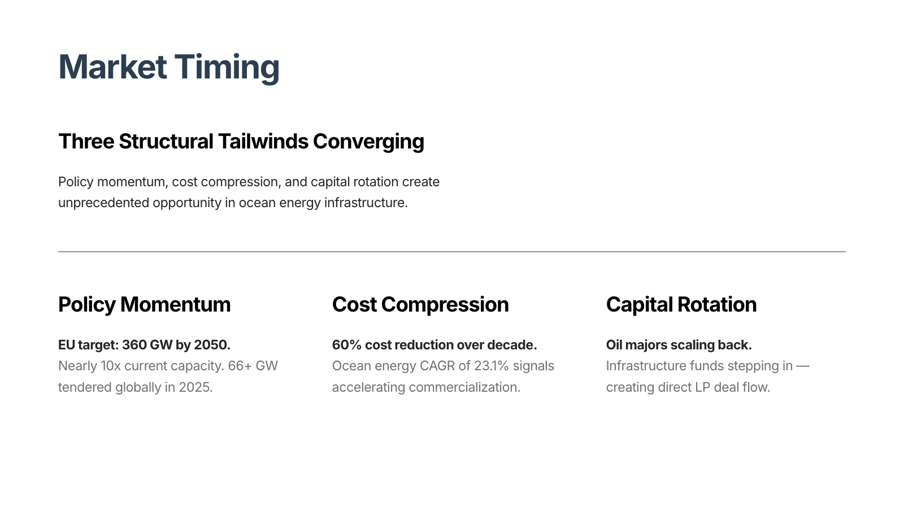
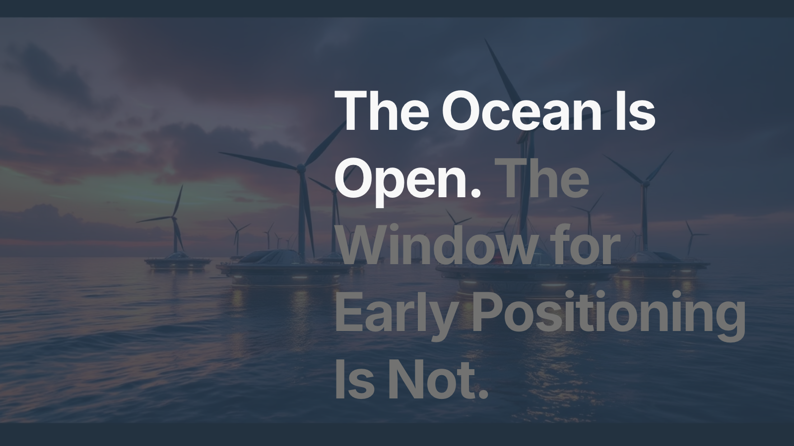
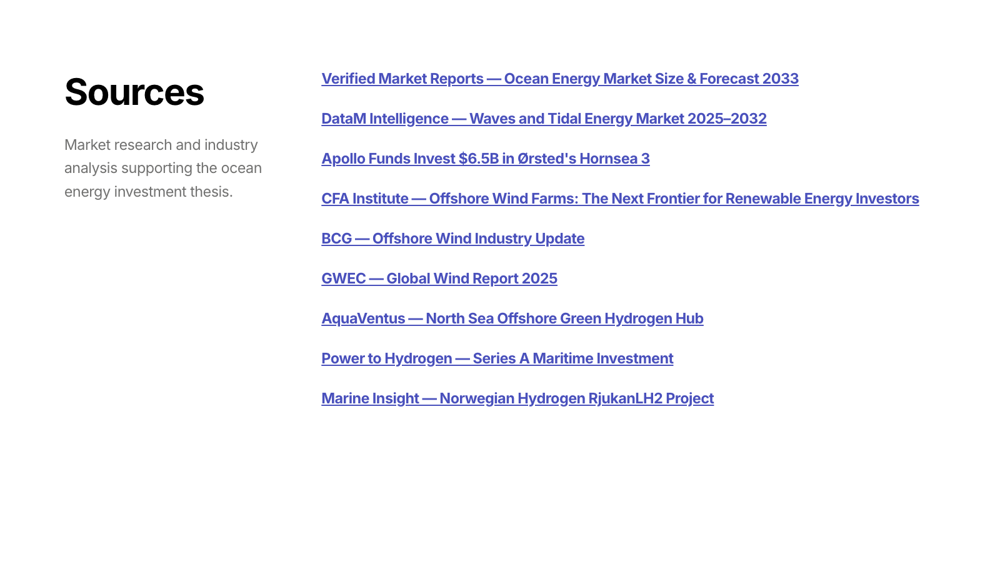

Swiss Guide: v1 (baseline) vs v2 + Pipeline Fix
Prompt: "Ocean energy investment thesis" • 2026-04-25 • Same outline, different compose rules
14/28 → 18/28 (+4 graders)
Philosophy-first design.md + guide-specific compositionRules in guide.ts unblocked 4 stuck-at-zero graders. Key wins: HR usage (0→1.0), stacked columns (0→0.29), bookend diagonal (0.41→0.62), grid deck (0.62→0.72).
Accent color in headings PASS PASS
Accidental alignment PASS PASS
Background color variety PASS PASS
Bookend diagonal FAIL PASS 0.41→0.62 ★
Closing card quality FAIL FAIL 0.00→0.00
Column split variety PASS PASS
Column usage PASS PASS
Display-scale typography FAIL FAIL 0.00→0.10
Empty-column offset PASS PASS 0.22→0.56
Grid (deck-level) FAIL PASS 0.62→0.72 ★
Grid structure FAIL FAIL 0.61→0.57
H1 inside column FAIL FAIL 0.00→0.00
HR usage FAIL PASS 0.00→1.00 ★★
Heading word break PASS PASS
Image load failure PASS PASS
No bullet lists PASS PASS
Prose (deck-level) PASS PASS
Prose density FAIL FAIL 0.57→0.71
Prose quality FAIL FAIL
Smart layout family count PASS PASS
Smart layout overuse PASS PASS
Stacked columns FAIL PASS 0.00→0.29 ★
Text-color hierarchy PASS PASS
Title card quality FAIL FAIL
Typographic statement FAIL FAIL 0.00→0.00
Vertical-align variety FAIL FAIL 0.50→0.50
Visual (deck-level) PASS PASS
Visual composition FAIL FAIL

Card 1 — Title (v1 uses DISPLAY, fix also uses DISPLAY)
Card 1 — Title (DISPLAY xl + diagonal offset)

Card 2 — Single column row

Card 2 — STACKED columns + HR + diagonal offset

Card 3

Card 4 — Behind-image breather
Card 4 — DISPLAY md breather

Card 5

Card 6

Card 6 — HR divider between heading + smart layout

Card 7

Card 7 — STACKED columns + HR + 3-col grid

Card 8 — Closing

Card 8 — DISPLAY xl + bold/muted + bookend diagonal

Card 9 — Sources

Card 9 — Sources
What Changed
- design-v2.md — Philosophy-first rewrite: design feelings intro, "4 Swiss Moves" patterns, structural constraints at bottom with concrete GML examples for diagonal offset and HR usage
- guide-config.ts — Added
compositionRules field to GuideConfig so guides can override compose prompt's generic rules
- compose-card.tool.ts — Uses guide.config.compositionRules when available, otherwise falls back to generic rules
- guide.ts (Swiss) — Added Swiss-specific compositionRules that mandate stacked columns, empty columns, DISPLAY tags, H1 placement, and HR dividers
Still Failing (10 graders)
- Closing card quality (0.00) — Vision grader; may need more examples of sparse closings
- Title card quality (0.00) — Vision grader; title uses DISPLAY but grader may want different composition
- Display-scale typography (0.10) — DISPLAY tags present now but grader has stricter visual criteria
- Typographic statement (0.00) — Needs a dedicated card with ONLY a display line and nothing else
- H1 inside column (0.00) — Still happening on card 2 (H1 inside stacked columns)
- Vertical-align variety (0.50) — Still defaulting to "start" on content cards
- Grid structure / Visual composition / Prose quality / Prose density — Card-level vision graders, need more iteration